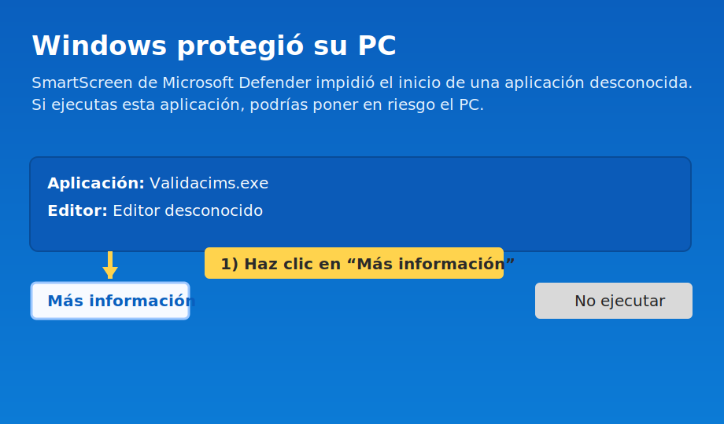
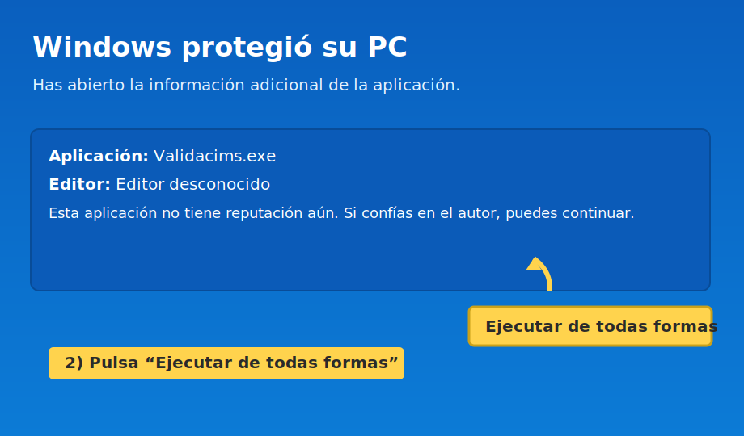
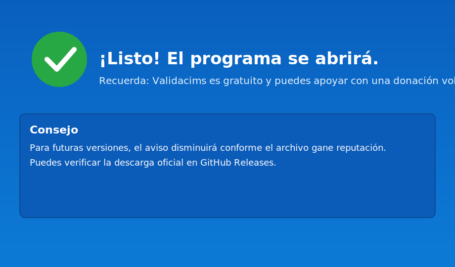

100 Cims
Validacims – Genera els teus formularis oficials
Programa gratuït que transforma la llista de cims pendents en PDFs llestos per validar. Compatible amb Windows i macOS.
Com funciona
1) Copia els cims
A la teva àrea privada de la FEEC, ordena per data (els més nous primer) i copia els cims pendents de validar.
2) Enganxa i personalitza
Obre Validacims, enganxa la llista i completa les teves dades (opcionalment les del/de la president/a).
3) Genera els PDF
Prem “Generar Fulls PDF”. Es guardaran a Documents/Validacims. Envia’ls a la teva entitat.
Guia: SmartScreen de Windows
Important: Windows pot mostrar un avís de Microsoft Defender SmartScreen
quan obres programes nous o poc instal·lats. Només continua si confies plenament en l’origen —
en aquest cas, la web oficial de Validacims.
- Descomprimeix Validacims.zip (clic dret → “Extraer todo…”) i obre la carpeta.
- Fes doble clic a Validacims.exe. Si apareix la finestra blava de SmartScreen:
- Prem Més informació (More info).
- Prem Executar de totes maneres (Run anyway).
2

3

4

Les pantalles poden variar lleugerament segons la versió de Windows.
A mesura que més gent utilitzi el programa, aquest avís sol aparèixer menys.
Si en el futur el projecte creix, valorarem invertir en un certificat de codi per eliminar-lo.
Vídeo explicatiu
Properament afegirem un vídeo breu per mostrar com funciona el programa.
Contacte
Dubtes o suggeriments? Escriu-me a validacims@gmail.com.